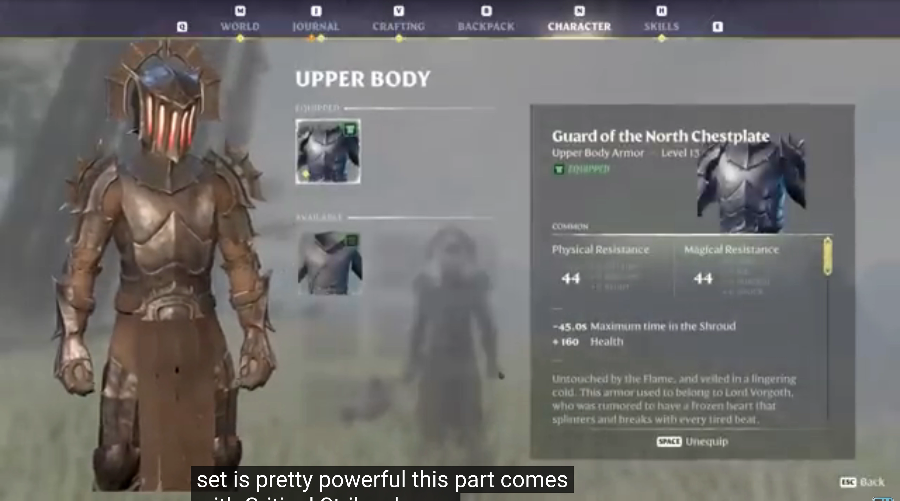
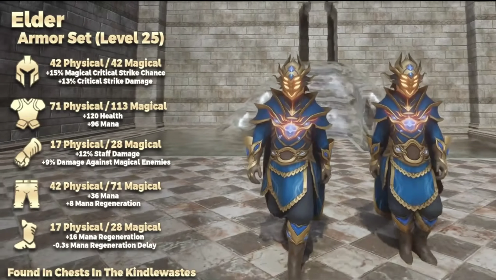

Enshrouded Armor Guide — How Armor Actually Works
Confused why your Guard of the North armor says 21 phys not 44? You're not alone. Most online guides are outdated. Here's how armor really works — drop levels, scaling, cosmetic slots, and best sets by class. Tested in-game, updated for Update 8.
Last updated: — verified for Enshrouded Update 8

⚡ Quick Answer: Armor is linear — 100 armor = 100 damage negated. Most armor sets drop at a fixed level determined by the chest, not your character level. Only 3 sets scale (Elder, Radiant Paladin, Eagle Eye). Your Guard of the North showing 21 not 44? The wiki is outdated — it was never nerfed, those old numbers were just wrong. Use the cosmetic slot (free transmog) to wear any armor's appearance with your best stats.
Table of Contents
🛡️ How Armor Works in Enshrouded
Armor is simpler than it seems — but the game never explains it.
📏 Linear Formula
100 armor = 100 damage blocked. There's no diminishing returns or complex curve. If you have 200 physical armor and get hit for 300 physical damage, you take 100 damage. Straight subtraction.
🔢 Mitigation Cap
Update 8 raised the cap from 60% to 80%. This means heavy armor can now block up to 80% of incoming damage before the flat subtraction applies. This made Tank builds viable again.
⚡ Five Damage Types
Physical (most common), Fire, Frost, Shock, Poison, and Shroud. Each armor piece has different resistance values for each type. Physical is the most important — stack it first.
⚠️ Why Online Stats Are Wrong
The #1 Enshrouded armor question on Reddit: "Why does my armor show different numbers than the wiki/guides?"
❌ Myth: "It was nerfed"
No. Guard of the North was never 44 phys per piece. Those numbers were either from an ancient build or just incorrect. The set is level 13 and always has been ~21-26 phys.
❌ Myth: "It scales with your level"
Wrong. Your character level and Flame level have zero impact on looted armor stats. Only the chest's level determines what drops.
❌ Myth: "Craft it at higher level"
Most armor sets cannot be crafted at all. They're chest drops only. And even craftable ones have fixed stats — your Flame level doesn't change them.
📈 The Only 3 Sets That Scale
Almost every armor set in Enshrouded drops at one fixed level. Only three exceptions exist.
👑 Elder Set
Levels 13-25. Drops from gold chests across multiple biomes. Stats vary based on the chest's level. The most commonly farmed scaling set. Good all-rounder for physical defense.
☀️ Radiant Paladin Set
Levels 13-25. Heavy armor with high physical and fire resistance. Best for Tank and Barbarian builds. Found in Albaneve Summits gold chests.
🦅 Eagle Eye Set
Levels 13-25. Ranged-focused armor with dexterity bonuses. Best for Ranger and Assassin builds. Found in higher-level gold chests.
📋 Full Armor Set Table
Every armor set in Enshrouded — level, type, and how to get it. Values are approximate for the set's base level.
| Set Name | Type | Fixed Level | Phys Resist | Source | Best For |
|---|---|---|---|---|---|
| Rising Fighter | Heavy | 5 | ~40/set | Craft (Blacksmith) | Early game melee |
| Adventurer | Medium | 8 | ~55/set | Craft (Blacksmith) | Early game balanced |
| Guard of the North | Heavy | 13 | ~100/set | Gold chests (Springlands+) | Mid-game melee |
| Mercenary | Heavy | 13 | ~110/set | Craft (Blacksmith) | Mid-game tank |
| Elder Set | Medium | 13-25 ⬆️ | Varies | Gold chests (all biomes) | All-rounder |
| Quetzal Hunter | Light | 18 | ~80/set | Gold chests (Nomad Highlands+) | Ranger |
| Tidecaller | Light | 18 | ~70/set | Gold chests (Revelwood+) | Mage |
| Hailcaster | Light | 23 | ~90/set | Gold chests (Kindlewastes+) | Mage DPS |
| Radiant Paladin | Heavy | 13-25 ⬆️ | Varies | Gold chests (Albaneve Summits) | Tank / Barbarian |
| Eagle Eye | Medium | 13-25 ⬆️ | Varies | Gold chests (Albaneve Summits) | Ranger / Assassin |
| Sunpiercer | Heavy | 25 | ~250/set | Gold chests (Albaneve Summits) | Endgame tank |
| Mountain's Shadow | Heavy | 25 | ~240/set | Craft (Blacksmith, max Flame) | Endgame melee |
⬆️ = Scaling set. Stats vary by chest level. Values shown are ranges — check the chest's zone for exact numbers.
🎯 Best Armor By Class
Which set to wear for each playstyle. Early game → endgame progression.
⚔️ Melee / Barbarian (2H)
Early: Rising Fighter → Guard of the North
Mid: Elder Set (Level 18+)
Endgame: Radiant Paladin (Level 25) or Sunpiercer
Mix-in: Wolf's Fang gloves (+15% 1H damage)
🛡️ Tank (1H + Shield)
Early: Rising Fighter → Mercenary
Mid: Guard of the North
Endgame: Sunpiercer Set
Why: 80% mitigation cap makes heavy armor the clear winner for tanks.
🔮 Mage / Battlemage
Early: Adventurer (balanced)
Mid: Tidecaller (mana regen)
Endgame: Hailcaster Set
Tip: Mages want INT bonuses over armor. Mix Hailcaster chest with Tidecaller pieces.
🏹 Ranger / Assassin
Early: Adventurer
Mid: Quetzal Hunter Set
Endgame: Eagle Eye (Level 25)
Mix-in: Skull Stalker Gloves for bonus crit damage.
🌱 Beginner / General
Start: Rising Fighter (craft ASAP)
Level 13: Farm Guard of the North from gold chests
Level 18+: Transition to your class-specific set based on playstyle.
👗 Cosmetic / Transmog System
Enshrouded has a free, built-in transmog system. Most players don't know it exists.
🪞 How to Use
Open inventory → click any armor slot → select the "Cosmetic" tab. Choose any armor piece you've ever collected. It overlays visually while keeping your real armor's stats.

💰 Cost
Free. No currency, no materials, no crafting. Change anytime. Keep your ugly-but-powerful armor underneath and look however you want.
💡 Pro Tip
Collect every armor piece you find — even low-level ones. Once unlocked in your collection, you can use them as cosmetics forever, even after you salvage the original.
💎 Gem System Overview
Update 7+ added gem slots to weapons. The system is poorly documented — here's what actually matters.
🔥 Gem of Burning
Adds fire DoT on hit. Verdict: Solid, reliable. Works on any weapon. Good default choice if you don't know what to slot.
🗡️ Gem of Cutting
Adds physical bleed DoT. Verdict: Good for melee builds. Stacks with your existing physical damage.
💀 Gem of Corruption
1 stack per hit (not chance-based). Up to 5 stacks. Explodes when enemy dies or no new stack for X seconds. Verdict: Great on fast weapons (wands, daggers). Shroud damage works on non-Shroud enemies.
☠️ Gem of Poison
Poison DoT. Verdict: Niche. Useful against specific enemies weak to poison. Skip for general use.
💡 Gem of Focused Light
Bonus crit damage after aiming. Verdict: Disappointing. The trigger condition is unclear and the damage bonus is underwhelming. Skip.
⚡ Gem of Currents
Shock damage + chain lightning. Verdict: Excellent on staves and wands. Pairs with Chain Hit for AoE clear. Best-in-slot for mages.
📌 Key Takeaways
🟢 Online Stats Are Often Wrong
Most guides and wikis show outdated armor numbers. Your gear isn't bugged — their data is old. Only trust sources dated after Update 8 (April 2026).
🟢 Only 3 Sets Scale
Elder, Radiant Paladin, and Eagle Eye. Everything else drops at one fixed level. Farm the scaling sets in higher-level zones for better versions.
🟢 Use Transmog — It's Free
Don't sacrifice stats for looks. Equip your best gear, then use the Cosmetic tab to display any armor's appearance. Free, unlimited, instant.
❓ Frequently Asked Questions
Why is my Guard of the North armor only 21 phys, not 44?
Does armor scale with character level or Flame level?
Can I upgrade my armor to a higher level?
What's the best armor for a beginner?
📖 Related Guides
⚔️ Best Weapons Tier List ⭐ Best Skills Tier List 💎 Legendary Weapon Farm ⚡ Starter Build
Armor Is Only Half the Build
Pair your armor with the right weapons and skills.
📝 Changelog
- 2026-07-18 — Published. Covers armor mechanics, scaling sets, transmog, gem system. All stats verified against Update 8.
Data Sources & References
- Keen Games Official — Patch notes and Update 8 changes
- r/Enshrouded Community — Player-verified armor stats and discussions
- Official Wiki — Base data (verify dates before trusting)
Was this armor guide helpful?